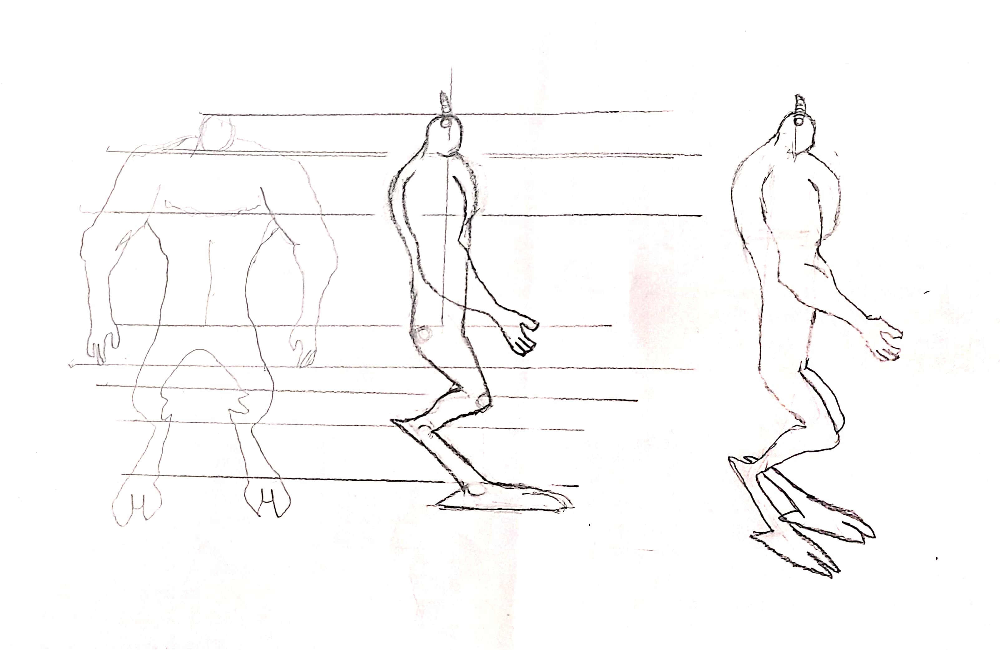

01 // Concepto
Del papel
al modelo.
El primer paso fue una hoja de personaje dibujada a mano: vista frontal y trasera del demonio. Pero al empezar a modelar noté un problema — las patas tenían una anatomía de cabra que necesitaba una vista lateral específica.
Rediseñé la hoja de personaje añadiendo esa vista lateral. Con esa referencia completa podía modelar con precisión cada curva y proporciones del cuerpo.

Primera hoja de personaje — turnaround dibujado a mano
La hoja de personaje corregida incluye la vista lateral de las patas, esencial para entender la anatomía de cabra del demonio. Esta versión fue la referencia definitiva usada durante todo el modelado.

Hoja de personaje completa — con vista lateral de patas de cabra